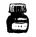

“If we were even perfectly satisfied, what meaning would the rest of our lives hold, right?” — Takehiko Inoue, Vagabond
TAKEHIKO
INOUE
Who is Takehiko Inoue?
Artwork
Works
Chameleon Jail (1989 to 1990)
"Risk Hunters" are a special breed of professionals, willing to take on the jobs that even experienced detectives, law enforcement officers, negotiators or agents are incapable of handling. Among them, one man stands out as the strongest, as well as the strangest, risk hunter. His name is ChameleonJ.

Slam Dunk (1990 to 1996)
Hanamichi Sakuragi, a delinquent outcast and leader of a gang - who was rejected fifty times - encounters Haruko Akagi, who recognizes Hanamichi's athleticism and introduces him to the Shohoku basketball team, but despite his immaturity and hot temper, he's good.
Buzzer Beater (1996 to 1998)
Hideyoshi is a homeless boy living in New York in the near future, who survives by hustling other kids in basketball games. But now he's been drafted into a pro team-a pro team with a very unique goal. There once was a time when humans dominated the game of basketball.
Vagabond(1998 to 2015)
Growing up in 17th century Sengoku era Japan, Shinmen Takezou is shunned by the local villagers as a devil child due to his wild and violent nature. Running away from home with a fellow boy at age 17, Takezou joins the Toyotomi army to fight the Tokugawa clan.

Real (1999 to present)
The story revolves around three teenagers: Nomiya Tomomi, a high school dropout, Togawa Kiyoharu, an ex-sprinter who now plays wheelchair basketball and Takahashi Hisanobu, a popular leader of the high school's basketball team who now finds himself a paraplegic after an accident.
Pepita
Pepita: Takehiko Inoue Meets Gaudí (pepita 井上雄彦 meets ガウディ) is a 2013 illustrated biographical travel memoir by Japanese manga artist Takehiko Inoue on the life and work of the Catalan Modernist architect Antoni Gaudí. Inoue's deep and personal work.
Commercial Success
| Manga | Volumes Sold | MAL Ratings | Revenue |
|---|---|---|---|
| Chameleon Jail | 38 million copies | 5.88 | 18,500,000$ |
| Slame Dunk | 150 million copies | 8.54 | 74,300,000$ |
| Buzzer Beater | 18 million copies | 6.80 | 9,220,000$ |
| Vagabond | 110 million copies | 9.24 | 55,030,000$ |
| Real | 51 million copies | 8.93 | 23,900,000$ |